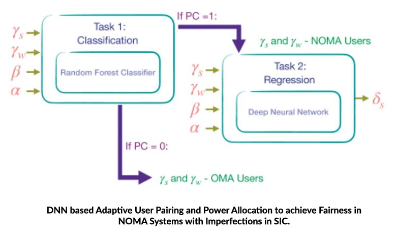

Applied Research Areas
Leading the way in AI research and innovation
Manufacturing Processes
Recent improvements in state-of-the-art experimental and computational infrastructures, affordability, automation, ubiquitous connectivity through IoT, and a global push towards meeting environmental constraints to ensure safety and sustainability resulted in the generation, processing and management of enormous amounts of heterogeneous data in the domain of Manufacturing.
Faculty Involved

Kishalay Mitra
Core Problems of Research
Process Systems Engineering (PSE), which deals with the manufacturing process design for the purpose of converting raw goods to usable end products, focuses on the design, operation, control, optimization and intensification of chemical, physical, and biological processes. Aim of research in this domain at IITH is to develop state-of-the-art AI/ML tools that can analyze vast amounts of highly complex data generated by the manufacturing process community and suggest optimization of performance under various sources of uncertainty.
Potential areas in PSE are targeted and how the applications of deep supervised / unsupervised learning methods can be useful to devise novel ways of finding solutions to existing issues is investigated through AI research. Some of the focussed areas are:
- Modeling steady and unsteady behaviour of the process.
- Replacing computationally expensive high-fidelity models with ML surrogates to enable optimization using them.
- Accurate system identification and data-based model predictive control of extremely nonlinear industrial processes.
- Image-based sensing for better optimization of the process.
- Uncertainty quantifications using global sensitivity analysis as well as generative modelling.
- ML-based single and multi-objective optimal control.
Sustainability
To maintain economic development, often the aspects of environmental care and social well-being are neglected, which eventually triggered the worldwide demand to make systems sustainable. Tackling the dual issues of dwindling reserve and greenhouse gas emissions while using fossil fuels as energy sources, usage of renewables is the new trend that can make energy generation sustainable.
Faculty Involved
Kishalay Mitra
Core Problems of Research
Even though state-of-the-art technologies are developed across the world to harness renewable energy, the efficiency remains low due to the uncertain and nonlinear nature of such resources. Additionally, a common problem faced in the domain of wind farm modeling is the computational expense related to simulating the entire study. Thus, wind farm layout optimization, wake modeling, uncertainty handling and control studies during energy harnessing from wind are certain areas of research that need a lot of focus. Novel methodologies to design optimal wind farms by combining the fields of deep learning, Computational Fluid Dynamics, combinatorial & evolutionary optimization, and uncertainty analysis are bearing fruits.
One of the ways towards sustainable energy generation is to go for green biofuels from bio-waste. India is yet to tap the full potential of the bioenergy sector despite 70% of its population depending on forest and agriculture. The national initiatives towards blending 20% biofuels with fossil fuels is a catalyzing factor in this direction. Though significant progress in research has been achieved while devising novel routes for bio-energy conversion from different biomass sources, a novel approach has been adopted in our research to tackle these problems holistically from the vantage point of a supply chain network designer. Similarly, another research direction towards waste to wealth creation by us is to design smart cities through optimal e-Waste management, which talks about utilization of electronic waste to the best extent possible before disposal leading to minimization of pollution to mother nature and optimum utilization of usage of otherwise very scarce resources (circular economy).
Autonomous Navigation
Autonomous navigation is a crucial aspect of modern robotics and is applied to a wide range of vehicles, including aerial, ground, surface, and underwater vehicles. Each of these vehicle types presents unique challenges and solutions when it comes to autonomous navigation. Common technologies and concepts that span all these types of autonomous navigation include: Machine Learning and Artificial Intelligence (AI), Communication Systems, Energy Management and Fail-Safe Mechanisms.
Faculty Involved

P. Rajalakshmi

Vineeth N Balasubramanian
Core Problems of Research
Some of the areas that are being actively researched at IITH include Swarms of autonomous aerial and ground vehicles, GPS based and Map based navigations, Path planning, GPS denied navigations, Multi-modal sensor data synchronization and fusion, Perception algorithms on the sensor fusion data, real-time control and actuation algorithms. The field of autonomous navigation continues to advance, with ongoing research and development focused on improving the reliability and capabilities of these vehicles across various domains or modes of transportation.
Social Media
Social media are web-based services that allow users to connect and share information. Due to the huge size of social network graphs and the plethora of generated content, it has various challenges, such as information diffusion, information overload, information organization, information categorization, etc. Here at IITH, we have been looking into all these aspects in different social media. We have also worked on problems like rumor detection, disaster management, and topic detection and tracking in social media. We also work on analyzing and solving problems arising in community question answering sites such as stack exchange. Due to differences in the way information is shared in various social media, and user privacy and security requirements, we need specific solutions to address the above listed problems. We have developed several solutions including models based on point processes such as Hawkes process and graph neural networks to address these problems.
Faculty Involved

Manish Singh

Srijith P.K

Maunendra Desarkar
Core Problems of Research
Information Diffusion
Information diffusion is a process by which information about new opinions, behaviors, conventions, practices, and technologies flow from person-to-person in a social network. Studies on information diffusion primarily focus on how information diffuses in networks and how to enhance information diffusion. Our work has been on enhancing the information diffusion in social networks. We have analyzed the effect of various important factors of information diffusion, such as network connectivity, location, posting timestamp, and post content. For example, we can find influential users for marketing a given information, find content that is likely to generate high user interaction and find time to post information that will give high visibility.
Information Overload
Social media services generate a huge volume of data every day, which is difficult to search or comprehend. We have proposed information summarization and semantic grouping methods to create a concise readable summary of huge volumes of unstructured information. We also extract tags from the data so that users can get a quick summary using the tags and also use them for content navigation
Information Organization
Data is often organized in social media using tags. Tags are used to segregate information and also to route posts between users. Since each social media has a huge number of tags, we are looking at how to mine the semantic relationship between these tags and organize them in the form of ontology. Tag frequency and text corpus can be used to mine such relationships for popular tags. However for new and rarely used tags these approaches cannot be used, so we propose use of topological features derived from the tag network to extract the relationship of rare/new tags with popular tags.
Information Categorization
Mostly all social media allow all users to post messages and replies. As a result, social media has a variety of information, such as spam information, fake information, relevant and irrelevant responses to posts, low and high quality posts, etc. NLP and social network analysis is often used to identify the above categories of information. Due to variations in social network structure, type of social interactions and post content, we propose specific algorithms to categorize information for each social media.
Astrophysics
Astrophysics has now become a ‘big data’ science. Many astrophysical surveys (mainly in optical and also radio) designed to obtain precise estimates of cosmological parameters as well as to map out the distant universe produce terabytes of data per night. Extracting the best science out of this data requires expertise in data mining, machine learning and astrostatistics. At IITH, we have been working on problems in this interface since 2016.
Faculty Involved

Shantanu Desai

Sumohana S Channappayya
Srijith PK
Core Problems of Research
Bayesian regression using novel methods
SD is part of multiple collaborations such as the Dark Energy Survey and Indian Pulsar Timing Array Consortium. Any inference in astrophysics is obtained using parametric regression analysis involving 10s to hundreds of free parameters. Usually, this is done using Bayesian inference with MCMC techniques. Similarly, in order to decide which theoretical model best fits the data, one typically uses Bayesian model comparison, often done using Nested sampling. With a master’s student (from CSE who had joined prior to the inception of the AI department), PKS and SD investigated the use of Variational inference (VI) for both parameter estimation and Bayesian model comparison. We demonstrated using multiple examples in different areas of Astronomy that VI is much faster than the frequently used MCMC methods (for Bayesian regression) and Nested sampling (for Bayesian model selection). We are also investigating alternate techniques such as Normalizing flows.
Star-galaxy separation using deep learning
As optical surveys probe the distant reaches of the universe, the distinction between stars and distant galaxies gets blurred using traditional techniques. Therefore, an EE student (along with SC, SD, PKS) has been investigating the use of DL techniques to test the efficacy of star/galaxy separation using SDSS data.
Masking artifacts in astronomical images using deep learning
Optical photometric imaging data from surveys such as DES with thick CCDs and long exposures contain transient artificial defects such as cosmic rays and satellite trails which could masquerade as transient astronomical sources and also degrade the sensitivity to detect faint sources if not accounted for. Along with a PhD student in EE, we (SC, SD, and PKS) have investigated a number of deep learning based methods to identify and interpolate over transient defects such as cosmic rays. We have tested this algorithm on both ground-based imaging data from DECam and LCOGT and also space-based telescopes such as the Hubble space telescope and have shown that they outperform the traditional techniques for cosmic ray identification using Laplace transform.
Galaxy morphology classification using deep learning techniques
A large number of photometric surveys such as SDSS, DES, Pan-STARRS, LSST, and Euclid have started or will soon start mapping out large contiguous regions of the sky with unprecedented image quality and with very deep exposures. Consequently, they have generated an avalanche of data for galaxies with a lot more diversity than seen with previous telescopes. Detailed characterization of this morphology is important for a variety of topics from galaxy evolution to cosmology. With a Master student from CSE, PKS and SD investigated the use of Neural ordinary differential equations and showed that its performance is similar to the widely used ResNet technique with much less computational complexity. With a current ID PhD student, we are exploring the explainability of deep techniques with Galaxy Zoo data.
Miscellaneous topics
SD and PKS have also applied unsupervised classification/clustering techniques for classification of a whole bunch of astronomical sources such as GRBs, pulsars, pulsar glitches using Gaussian Mixture Model and also Extreme Deconvolution (which is an extension of GMM, that incorporates the uncertainties in the data). SD has also started some exploratory work (along with students) to investigate Symbolic regression, which tries to do an ab initio parametric regression analysis between the input and output variables.
Communications
5G and beyond networks have stringent requirements in terms of latency, reliability, throughput, user experience and others. Dynamic optimization of the network to achieve these parameters is a complex process. Artificial Intelligence and Machine Learning (AI/ML) is increasingly being looked upon as a key technology to address these problems at multiple levels in the network. In recent times, several works have looked upon joint communication and sensing using already deployed wireless networks. Technologies like mmWave, LTE, WiFi, etc. have shown promise in both classification and localization of objects like humans, cars, and drones. The heterogeneity of communication use-cases like machine type communications (MTC), Internet-of-Things (IoT), vehicle-to-vehicle communication (V2V), unmanned aerial vehicles (UAVs), etc. further necessitates the usage of AI/ML in 5G and beyond networks.
Faculty Involved

Abhinav Kumar
Sai Dhiraj Amuru
Core Problems of Research
The existing efforts in AI/ML for 5G and beyond networks at IITH can be broadly classified into the following:
Enhanced Radio Access Network (RAN): This includes works like supervised deep learning based MIMO precoding, double deep reinforcement learning based handover mechanism, DNN-based Adaptive User Pairing and Power Allocation to achieve Fairness in NOMA Systems with Imperfections in SIC.
Object classification and localization: Several works in the group have considered using mmWave FMCW RADAR for UAV/Car/Human classification and localization. The work on Fingerprint Image-Based Multi-Building 3D Indoor Wi-Fi Localization Using Convolutional Neural Networks received recognition in NCC 2022.
Internet-of-Things: Application of Deep Learning and Blockchain for Secure Communication in Digital Twin Empowered Industrial IoT Network.

Systems for AI
In general, AI systems consider large amounts of training data, analyzing the data for correlations and patterns, and using these patterns to make predictions about future states. So, to be effective at this, the AI systems will have to efficiently work on the Systems aspect for efficient processing of training data and learn from them.
In fact, GPUs have become very popular and have helped AI/ML systems immensely to learn at a faster rate. In this context, our team has been working with efficient algorithms to process large amounts of data efficiently on CPUs. We are currently working with CPUs and later extend these ideas to GPU systems.
Faculty Involved

Sathya Peri
Brief summary of our work on the area of graph analytics
Graph algorithms have several diverse applications, including social networks, communication networks, VLSI design, graphics, etc. Many of these applications require dynamic modifications — addition and removal of vertices and/or edges — in the graph. Our team has recently developed algorithms for Concurrent Graphs which I will explain in this talk. In this work, we developed a novel concurrent non-blocking algorithm to implement a dynamic unbounded directed graph in a shared-memory machine. The addition and removal operations of vertices and edges are lock-free. For a finite-sized graph, the lookup operations are wait-free.
In addition to these point operations, we then considered a set method which is the most significant component of the presented algorithm: reachability query in a concurrent graph which identifies if there is a path between two vertices in such a dynamic network. The solution to the reachability query in our algorithm is obstruction-free and thus impose minimal additional synchronization cost over other operations. We showed that each of the data structure operations are linearizable. We did some extensive evaluations on the C++ implementation of the algorithm through various micro-benchmarks. Our implementation results have also been very good. On average, we perform around 5x better than sequential graph implementation.